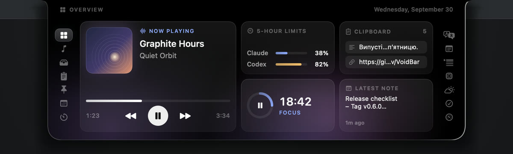
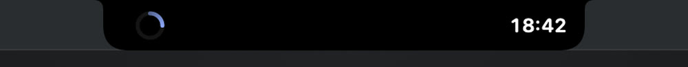
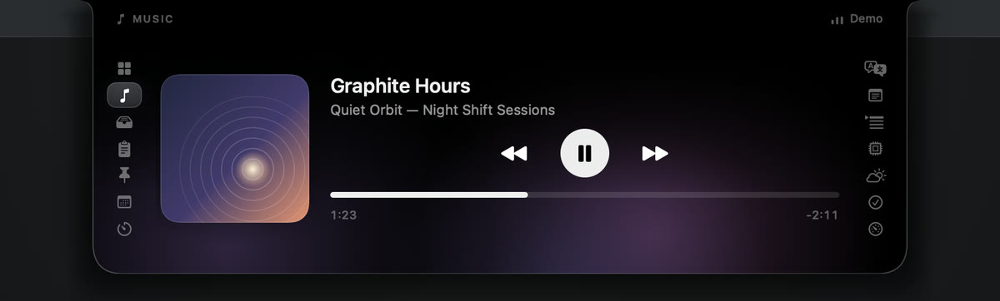
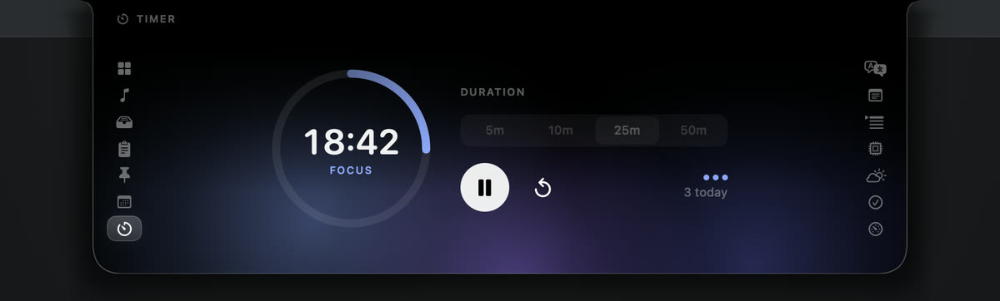

VoidBar turns the dead space around the notch into a panel that opens on hover: music, files, clipboard, notes, translation, focus, and your AI coding limits — then gets out of the way.
The panel opens onto an Overview built from the tabs you actually keep. No weather if you never check it — just what matters to you.

While music plays or a focus session runs, the notch grows a wing on each side — the cover or a progress ring on the left, a live equalizer or countdown on the right. Hover, and it pours open.


Every tab can be hidden or reordered. Pick one to see it.

See how much of your five-hour and weekly windows is used, and when each resets. Codex is read from its local logs; Claude from your account, only when you press refresh.
/usage shows — never in the background.Pick an accent — six presets or any colour — and let the aurora follow what is on screen, your accent, or turn it off. The panel itself stays black, so it always melts into the notch.
VoidBar is native SwiftUI and AppKit — no Electron. Everything stays on your Mac unless a feature you opened says otherwise.
History lives only while VoidBar runs. Password managers' entries are ignored.
Weather, TickTick, and Spotify artwork are VoidBar's only network calls — each listed in PRIVACY.md.
English ↔ Ukrainian through Apple's Translation framework, not a cloud service.
Read every line on GitHub, build it yourself in one command, or verify the release checksum.
macOS 15 Sequoia or later on an Apple Silicon Mac.
VoidBar-…-arm64.dmg from GitHub Releases.Optional: verify the download against the checksum published with the release.
shasum -a 256 -c VoidBar-*-arm64.dmg.sha256
Prefer to build it yourself?
git clone https://github.com/xand0dev/VoidBar.git && cd VoidBar && ./Scripts/bundle.sh && open build/VoidBar.app